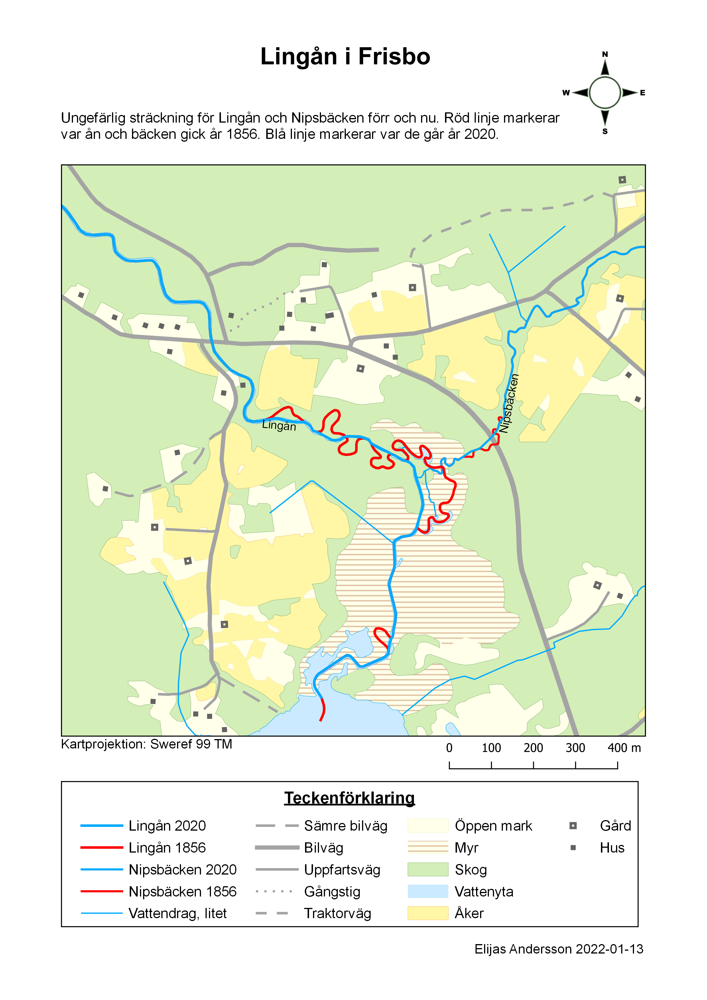
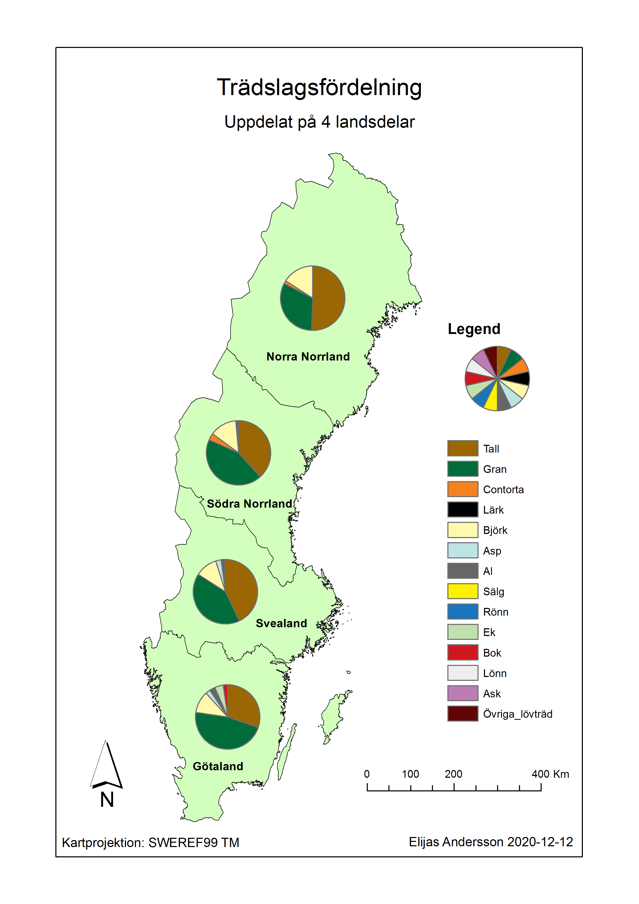
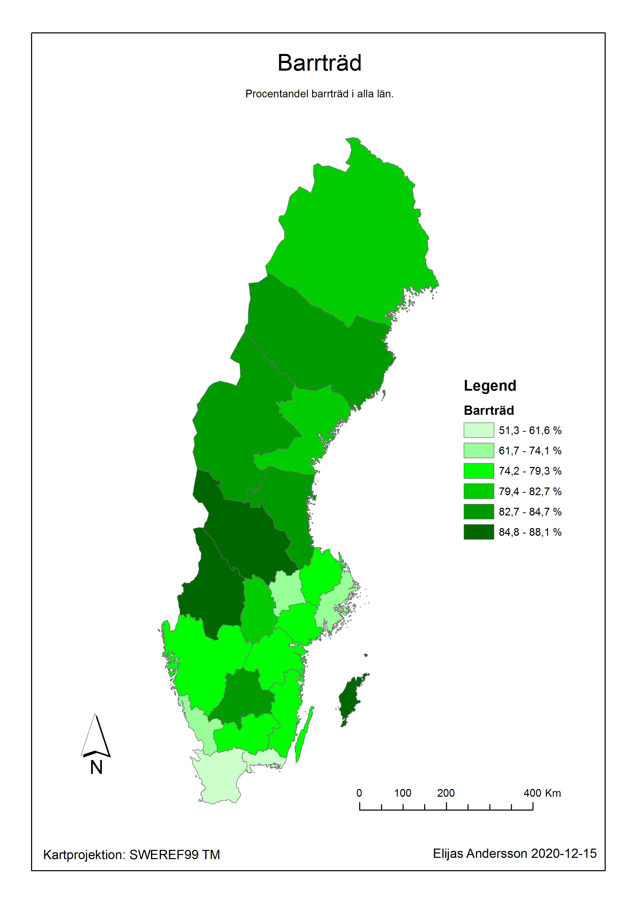

Karta över Lingåns sträckning, en jämförelse mellan år 1856 och 2020.
Portfolio
Vill du skriva ut innehållet på den här sidan? Använd den här versionen.
Lingån i Frisbo, Bjuråker, Hälsingland
Karta över Lingåns sträckning, en jämförelse mellan år 1856 och 2020.
Trädslagsfördelning i Sverige
Sverigekarta med pajdiagram över vilka trädslag som dominerar i Götaland, Svealand, Södra Norrland och Norra Norrland.
Barrträd i Sverige
Sverigekarta som visar procentandel barrträd i Sveriges län.
